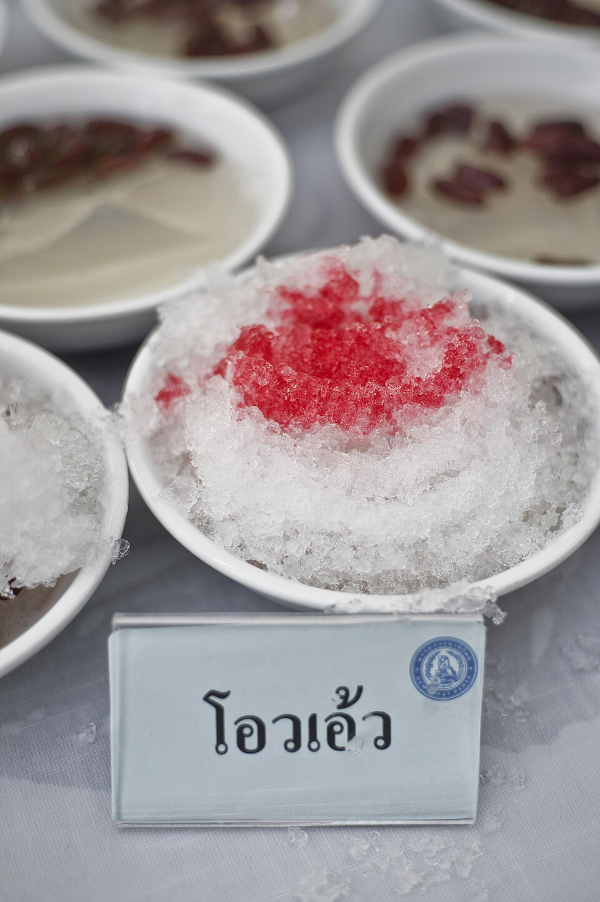

น้ำแข็งไส
Thai shaved ice · Thailand
A colourful mix of ice, sweet syrup and toppings, with plenty of textures in one bowl.
- Texture
- Shaved or crushed ice with a refreshing crunch.
- Base
- Water ice with syrup, often finished with condensed or coconut milk.
- Typical toppings
- Grass jelly, palm seeds, fruit, sweet beans or bread.